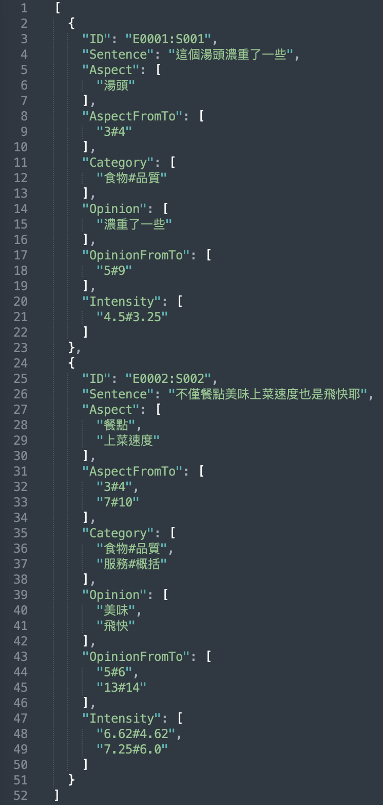

Join our WeChat Group (Chinese) for updates and discussion on the shared task!
If you have any questions, please email (English/Chinese) us.
CodaBench page: https://www.codabench.org/competitions/2137/
Aspect-Based Sentiment Analysis (ABSA) (Pontiki et al., 2014; 2015; 2016) is a critical NLP research topic that aims to identify the aspects of a given entity and analyzing the sentiment polarity associated with each aspect. In recent years, numerous research effects have been made on ABSA, which can be categorized into different tasks based on the number of sentimental elements to be extracted. For example, Aspect Sentiment Triplet Extraction (ASTE) (Yu et al., 2023; Chen et al., 2021; Mao et al., 2021; Peng et al., 2020; Wu et al., 2020; Xu et al., 2020; Zhang et al., 2020) task extracts three elements in a triplet, including aspect/target term, opinion term and sentiment polarity (e.g., positive, neutral, and negative). Furthermore, Aspect Sentiment Quadruple Prediction (ASQP) (Cai et al., 2021; Gao et al., 2022; Mao et al., 2022; Peper & Wang, 2022; Zhang et al., 2021; Zhou et al., 2023) task extracts the same three elements plus an additional aspect category to construct a quadruple. However, compared to representing affective states as several discrete classes (i.e., polarity), the dimensional approach that represents affective states as continuous numerical values (called intensity) in multiple dimensions such as valence-arousal (VA) space (Russel, 1980), providing more fine-grained emotional information (Lee et al., 2022).
Therefore, we organize a Chinese dimensional ABSA shared task (dimABSA) in the SIGHAN 2024 workshop, providing fine-grained sentiment intensity prediction for each extracted aspect of a restaurant review. The four sentiment elements are defined as follows:
This task aims to evaluate the capability of an automatic system for Chinese dimensional ABSA. This task can be further divided into three subtasks described as follows.
The first subtask focuses on predicting sentiment intensities in the valence-arousal dimensions. Given a sentence and a specific aspect, the system should predict the valence-arousal ratings. The input format consists of ID, sentence, and aspect. The output format consists of the ID and valence-arousal predicted values that are separated with a 'space'. The intensity prediction is two real-valued scores rounded to two decimal places and separated by a hashtag, each denotes the valence and arousal rating, respectively.
(Traditional Chinese version)
Input: E0001:S001, 檸檬醬也不會太油，塔皮對我而言稍軟。, 檸檬醬#塔皮
Output: E0001:S001 (檸檬醬,5.67#5.5)(塔皮,4.83#5.0)
(Simplified Chinese version)
Input: E0001:S001, 柠檬酱也不会太油，塔皮对我而言稍软。 柠檬酱#塔皮
Output: E0001:S001 (柠檬酱,5.67#5.5)(塔皮,4.83#5.0)
The second subtask aims to extract sentiment triplets composed of three elements. Given a sentence only, the system should extract all sentiment triplets (aspect, opinion, intensity). The output format consists of the ID and sentiment triplet that are separated with a 'space'.
(Traditional Chinese version)
Input: E0002:S002, 不僅餐點美味上菜速度也是飛快耶！！
Output: E0002:S002 (餐點, 美味, 6.63#4.63) (上菜速度, 飛快, 7.25#6.00)
(Simplified Chinese version)
Input: E0002:S002, 不仅餐点美味上菜速度也是飞快耶!!
Output: E0002:S002 (餐点, 美味, 6.63#4.63) (上菜速度, 飞快, 7.25#6.00)
The third subtask aims to extract sentiment quadruples composed of four elements. Given a sentence only, the system should extract all sentiment quadruples (aspect, category, opinion, intensity). The output format consists of the ID and sentiment quadruple that are separated with a 'space'.
(Traditional Chinese version)
Input: E0003:S003, 這碗拉麵超級無敵霹靂難吃
Output: E0003:S003 (拉麵, 食物#品質, 超級無敵霹靂難吃, 2.00#7.88)
(Simplified Chinese version)
Input: E0003:S003, 这碗拉面超级无敌霹雳难吃
Output: E0003:S003 (拉面, 食物#品质, 超级无敌霹雳难吃, 2.00#7.88)
We first crawled reviews from a popular online social media platform. Then, we removed all HTML tags and multimedia material and split the remaining texts into several sentences. Finally, we randomly selected partial sentences to retain content diversity for manual annotation.
The annotation process is conducted in two phases. We first annotate the aspect/category/opinion elements and then V#A element. In the first phase, three graduate students majoring in computer science and linguistics will annotate the sentences for aspect/category/opinion. One task organizer will lead a discussion to clarify annotation differences and seek consensus among the annotators. A majority vote mechanism is finally used to resolve any disagreements among the annotators. In the second phase, each sentence along with the annotated aspect/category/opinion will be presented to five annotators majoring in computer science and linguistics for V#A rating. Similarly, one task organizers will also lead a group discussion during annotation. Once the annotation process is finished, a cleanup procedure is performed to remove outlier values which do not fall within 1.5 standard deviations (SD) of the mean. These outliers are then excluded from calculating the average V#A for each instance.
1. The policy of this shared task is an open test. Participating systems can use other publicly available data for this shared task, but other data should be specified in the final system description paper.
2. We will provide two versions of the training set and two test sets. The only difference is the usage of Chinese characters, either in Traditional Chinese or Simplified Chinese. The participating teams can choose their preferred version for the task evaluation. The submitted results will be evaluated with the corresponding version of the gold standard and ranked together as the official results.
http://nlp.innobic.yzu.edu.tw/resources/ChineseEmoBank.html
The Chinese EmoBank (Lee et al., 2022) is a dimensional sentiment resource annotated with real-valued scores for both valence and arousal dimensions. The valence represents the degree of positive and negative sentiment, and arousal represents the degree of calm and excitement. Both dimensions range from 1 (highly negative or calm) to 9 (highly positive or excited). The Chinese EmoBank features various levels of text granularity including two lexicons called Chinese valence-arousal words (CVAW, 5,512 single words) and Chinese valence-arousal phrases (CVAP, 2,998 multi-word phrases) and two corpora called Chinese valence-arousal sentences (CVAS, 2,582 single sentences) and Chinese valence-arousal texts (CVAT, 2,969 multi-sentence texts).
We will provide data sets consisting of at least 3000 annotated sentences for model training and development. Below are samples in a JSON format that can be used for all three subtasks.
|  |
|---|
Two mutually exclusive sets are prepared for the corresponding subtasks, respectively; each includes at least 1,000 sentences that will be provided for system performance evaluation. One is provided for Subtask 1, and the other is used for Subtasks 2 & 3.
The sentiment intensity prediction performance is evaluated by examining the difference between machine-predicted ratings and human-annotated ratings using two metrics: Mean Absolute Error (MAE) and Pearson Correlation Coefficient (PCC), defined as the following Equations.
$$ MAE = \frac{1}{n} \sum_{i=1}^{n}|a_{i}-p_{i}| $$
$$ PCC = \frac{1}{n-1} \sum_{i=1}^{n}(\frac{a_{i}-\mu_{A}}{\sigma_{A}})(\frac{p_{i}-\mu_{P}}{\sigma_{P}}) $$
where \( a_{i}\in{A} \) and \( p_{i}\in{P} \) respectively denote the i-th actual value and predicted value, n is the number of test samples, \( \mu_{A} \) and \( \sigma_{P} \) respectively represent the mean value and the standard deviation of A, while \( \mu_{A} \) and \( \sigma_{P} \) respectively represent the mean value and the standard deviation of P.
Each metric for the valence and arousal dimensions is calculated and ranked independently. The actual and predicted real values should range from 1 to 9, so MAE measures the error rate in a range where the lowest value is 0 and the highest value is 8. A lower MAE indicates more accurate prediction performance. The PCC is a value between −1 and 1 that measures the linear correlation between the actual and predicted values. A lower MAE and a higher PCC indicate more accurate prediction performance.
First, the valence and arousal values are rounded to an integer. Next, a triplet/quadruple is regarded as correct if and only if the three/four elements and their combination match those in the gold triplet/quadruple. On this basis, we calculate the Precision, Recall, and F1-score as the evaluation metrics, defined as the following equations.
$$ Precision = \frac{TP}{TP+FP} $$
$$ Recall = \frac{TP}{TP+FN} $$
$$ F1 = \frac{2*Precision*Recall}{Precision+Recall} $$
where TP, FP, and FN denote true positives, false positives, and false negatives, respectively. Precision is defined as the percentage of triplets/quadruples extracted by the system that are correct. Recall is the percentage of triplets/quadruples present in the test set found by the system. The F1-score is the harmonic mean of precision and recall. All metrics range from 0 to 1. A higher Precision, Recall, and F1 score indicate more accurate performance. A system’s overall ranking is based on the F1 score. The higher the F1 score, the better the system performance.
Each metric for the valence and arousal dimensions is calculated and ranked either independently or in combination. Precision is defined as the percentage of triplets/quadruples extracted by the system that are correct. Recall is the percentage of triplets/quadruples present in the test set found by the system. The F1-score is the harmonic mean of precision and recall. All metrics range from 0 to 1. A higher Precision, Recall, and F1 score indicate more accurate performance.
If you have built a successful system and completed a submission to the leaderboard, we gladly invite you to submit a shared task paper to the SIGHAN 2024 workshop. If you would like to publish a paper, please carefully follow these instructions:
1. Write your paper using the ACL 2024 template.
2. Papers must be written in English.
3. Paper titles should adopt the format: “TEAM_NAME at SIGHAN-2024 dimABSA Task:” followed by a descriptive title of the proposed approach.
4. Submissions are not anonymous for review, so author names and affiliations could be included in the paper.
5. The page limitation is four pages (excluding references) for a single subtask; and the length limit is eight pages (excluding references) for multiple subtasks.
6. Please cite the following overview paper (just as we will cite your task paper).
Lung-Hao Lee, Liang-Chih Yu, Suge Wang, and Jian Liao. 2024. Overview of the SIGHAN 2024 shared task for Chinese dimensional aspect-based sentiment analysis. In Proceedings of the 10th SIGHAN Workshop on Chinese Language Processing. Association for Computational Linguistics.
7. Submission Deadline: 17th June, 2024 (anywhere on Earth)
8. Submission Site: OpenReview
9. Reviewer Nomination: Similar to other shared tasks (e.g. SemEval), we ask at least one author per paper also acts as a reviewer. Please nominate the reviewer by the submssion deadline. If you do not nominate a reviewer, the first author or corresponding author will be automatically selected.
10. Each accepted task paper will be included in the SIGHAN-2024 proceedings. At least one author must register to present their developed system at the SIGHAN-2024 Workshop (16th August, collocated with ACL 2024, in Bangkok, Thailand).
The evaluation committee will select the Best Evaluation Paper Award and recommend two evaluation papers for publication in the Special Issue on New Advances in Affective Computing， Electronics (IF 2.9).
Notes: Each metric in individual subtask is ranked independently. (*) means the rank for each metric. A system’s overall ranking is computed based on the cumulative rank. The lower the cumulative rank, the better the system performance.
| Subtask 1: Intensity Prediction | ||||||
|---|---|---|---|---|---|---|
| Team | Sub# | Evaluation Metrics | Overall Rank | |||
| V-MAE | V-PCC | A-MAE | A-PCC | |||
| HITSZ-HLT | 63885 | 0.279 (1) | 0.933 (1) | 0.309 (1) | 0.777 (1) | 1 |
| CCIIPLab | 63706 | 0.294 (2) | 0.916 (3) | 0.309 (1) | 0.766 (3) | 2 |
| YUN-HPCC | 63756 | 0.294 (2) | 0.917 (2) | 0.318 (3) | 0.771 (2) | 2 |
| DS-Group | 62014 | 0.460 (4) | 0.858 (5) | 0.501 (4) | 0.490 (4) | 4 |
| yangnan | 61884 | 1.032 (5) | 0.877 (4) | 1.095 (5) | 0.097 (5) | 5 |
| Subtask 2: Triplet Extraction | |||||
|---|---|---|---|---|---|
| Team | Sub# | Evaluation Metrics | Overall Rank | ||
| V-Tri-F1 | A-Tri-F1 | VA-Tri-F1 | |||
| HITSZ-HLT | 63885 | 0.589 (1) | 0.545 (1) | 0.433 (1) | 1 |
| CCIIPLab | 63824 | 0.573 (2) | 0.522 (2) | 0.403 (2) | 2 |
| LUCKY-NLP | 63737 | 0.542 (3) | 0.507 (3) | 0.389 (3) | 3 |
| bitnlp | 63766 | 0.490 (4) | 0.450 (4) | 0.342 (4) | 4 |
| SUDA-NLP | 63827 | 0.475 (5) | 0.448 (5) | 0.326 (5) | 5 |
| TMAK-Plus | 63972 | 0.269 (6) | 0.307 (6) | 0.157 (6) | 6 |
| Subtask 3: Quadruple Extraction | |||||
|---|---|---|---|---|---|
| Team | Sub# | Evaluation Metrics | Overall Rank | ||
| V-Quad-F1 | A-Quad-F1 | VA-Quad-F1 | |||
| HITSZ-HLT | 63885 | 0.567(1) | 0.526 (1) | 0.417 (1) | 1 |
| CCIIPLab | 63832 | 0.555 (2) | 0.507 (2) | 0.389 (2) | 2 |
| LUCKY-NLP | 61868 | 0.522 (3) | 0.489 (3) | 0.376 (3) | 3 |
| SUDA-NLP | 63622 | 0.487 (4) | 0.444 (4) | 0.336 (4) | 4 |
| JN-NLP | 63572 | 0.482 (5) | 0.439 (5) | 0.331 (5) | 5 |
| bitnlp | 63766 | 0.470 (6) | 0.434 (7) | 0.329 (6) | 6 |
| USTC-IAT | 63907 | 0.438 (7) | 0.437 (6) | 0.312 (7) | 7 |